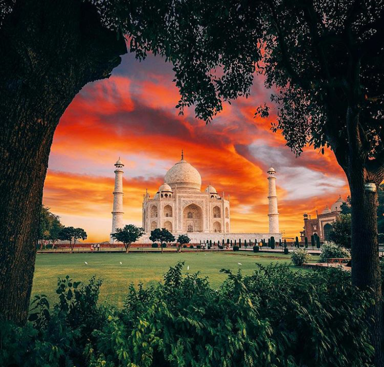

In 2020, my son had planned to visit us in Mumbai from the USA around April/ May before plunging into his internship. But then the pandemic broke in April 2020 and all travel plans got cancelled and the wait became longer. Now finally after two and a half years as his Feb-end 2022 travel date drew closer, the Ukraine-Russia war broke out. We held our breath and kept our fingers crossed. Luckily for us, United Airlines held on till the day after he arrived before suspending their direct flights to Mumbai. Besides catching up with friends and family, the visit has been planned around his work visa stamping appointment which he managed to get only at the US Embassy at New Delhi. Since he had a gap of two days between the biometrics and his visa interview, we decided to convert this into a family road trip to visit the Keoladeo Bird sanctuary at Bharatpur, Fathepur-Sikri, Taj Mahal at Agra and back to Delhi. Although I was born in Pune, due to my dad working with Coca-Cola at New Delhi, my pre-school and KG happened in Delhi, way back in the late ‘60s. Since then, during the growing years of our kids, we have visited Delhi more than a couple of times. Since we are foodies, during any visit to Delhi, a visit to Bengali Market or Nizams at Connaught Place (CP) to get our fill of Delhi Kachori, Dahi Bhalla, Papdi Chaat,Lassi and kebabs is a must. However, beyond the street food, so far we have managed to do only day trips to Agra and back, which becomes a rush-rush and gets hectic. So this time, to be able to do justice, we planned our visit with overnight stays at Delhi, Bharatpur and Agra. At Delhi, since we were putting up at Chanakyapuri, we were in the heart of Delhi. We were a stone’s throw from the embassy enclave, Raj Bhavan, India Gate as well as within Uber’able distance of Pandara road. So we decided to make the most of it before pushing off for our round road trip. We grabbed a Kebab’s dinner at Gulati’s at Pandara Road.
The complex is towered over by the great tomb, which serves as the final resting place to the emperor's wife, Mumtaz Mahal, as well as the emperor himself. It is said that the works on this magnificent building made out of white marble required the efforts of as many as 20.000 builders, who had to labour on it for more than a decade. When visiting the Taj, do not miss the chance to take a look into the Taj Museum, located nearby the main tomb, as well. Also remember that it is forbidden to eat and smoke on the premises. Taking pictures is permitted, but only outside the main mausoleum.
Subscribe here for latest Update and Taj tour tips.